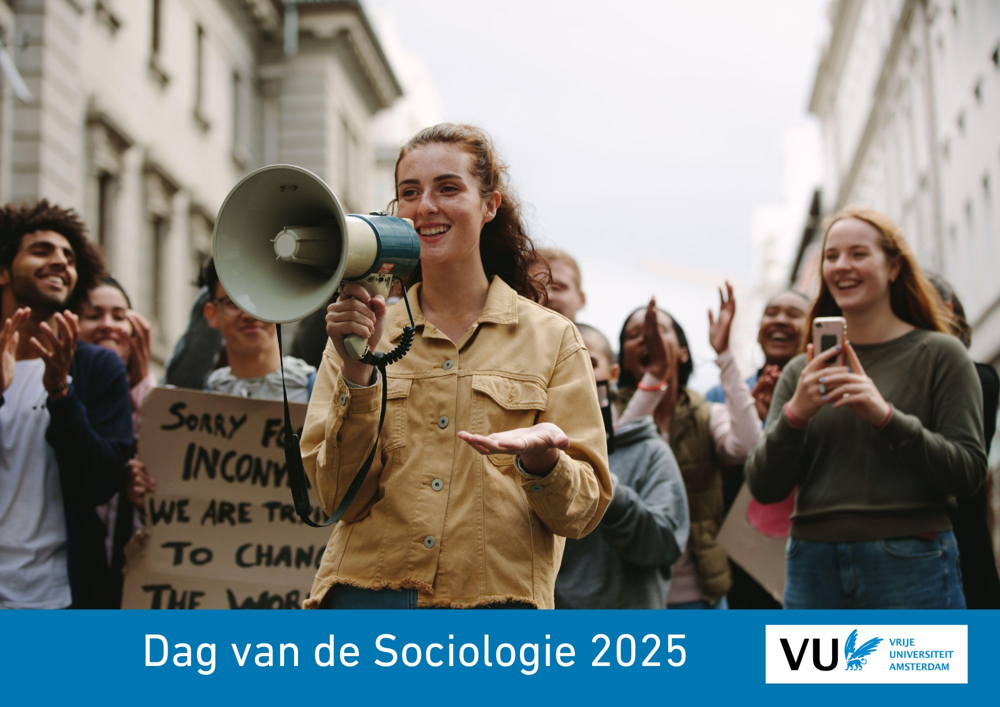

De kritische socioloog?
Er is veel onrust in de huidige samenleving. Velen spreken zich uit voor of tegen actuele thema’s in demonstraties, de media en online platforms. Denk aan klimaatverandering of de oorlog in Gaza. Moeten sociologen zich meer mengen in het publieke debat en hun politieke visie geven? Of schaadt dat juist het imago van de wetenschap en moeten sociologen juist trachten om een neutrale en onpartijdige positie in te nemen? Hoe om te gaan met de spanning tussen het streven naar zowel een waardevrije (objectieve) als waardevolle (maatschappelijk betrokken) wetenschap?
Tijdens de plenaire sessie zullen de keynote speakers — Thijs Bol, Nadia Fadil, Fenna van Marle, Irene van Oorschot — hun ervaringen met ons delen.
1. Geweld en (on)veiligheid (NL) - (open voor inzendingen)
Don Weenink
Deze sessie biedt een podium voor Nederlands onderzoek naar verschillende vormen van geweld, intimidatie en veiligheid(sbeleid). Denk aan thema’s zoals institutioneel geweld (gevangenis, politie), geweld gepleegd door mannen tegen vrouwen (partner geweld, straatintimidatie), politiek geweld (terrorisme, intimidatie van journalisten en politici), geweld gerelateerd aan criminele economieën (drugs, milieugeweld) en de met deze geweldsvormen samenhangende politieke en beleidsmatige interventies. We verwelkomen daarnaast presentaties over theoretische kwesties zoals de rol van technologie en lichaam, de mate van asymmetrie tussen partijen en de temporaliteit van (opeenvolgende) gewelddadige interacties. Tenslotte zien we uit naar presentaties over de methodologische aspecten en innovatie van geweldsonderzoek.
Trefwoorden: geweld, intimidatie, veiligheid(sbeleid)
2. Thinking-with and thinking-thick in co-creative research with marginalized communities (EN) - (open for submissions)
Elena Ponzoni and Lise Woensdregt
This panel invites scholars studying topics related to inequality to reflect on co-creative methodologies for inclusive knowledge production, if possible, in dialogue with members of communities they engage with in their work, and relevant practitioners. The panel is organized by the Co-Creation for Inclusive Knowledges Lab at the Faculty of Social Sciences, Vrije Universiteit Amsterdam, which supports and connects (sociological) research engaged in reducing inequality. This initiative promotes co-creative methodologies that democratize knowledge production. By integrating community wisdom and experiential, professional, and academic knowledge, the lab facilitates productive exchanges that challenge exclusionary structures and foster transformative change. The panel draws inspiration from ethics of care in knowledge production as a core for co-creative methodologies. Puig de la Bellacasa (2012) presents care as a way of thinking and knowing by foregrounding interdependency and curiosity. For the scholar this means embracing vulnerability instead of positioning oneself as the knowing subject. She advocates for “thinking with”, which means standing for sustainable and vital relations with communities and creating conditions for co-creation of knowledges that will bring horizons together. This specific panel aims to highlight the transformative potential of bridging diverse forms of knowledge and the vital contributions of those navigating the intersection of communities and institutions. Together, we will reflect on how such approaches can drive meaningful societal change.
Keywords: Co-creation, marginalized communities, inclusive knowledge production
3. Open Science: open-source software for advanced data analysis in sociology (EN) - (open for submissions)
Mauricio Garnier-Villarreal, Marcos José Jiménez Henríquez and Terrence D. Jorgensen
Latent Variable Models (LVMs) are arguably one of the most powerful and flexible multivariate-statistical methods currently available. Their scope includes a wide spectrum of statistical frameworks like Structural Equation Modeling (SEM), and Mixture Models (MMs). As such, they are considered the cornerstone of many statistical analyses encountered in fields like social, political, education, clinical and behavioural sciences. LVMs allow the test of theories where the subject of research involves nonobservable variables like cognitive skills, personality traits, and psychopathological features (in psychology), the modeling of attitudes and opinions (in survey research), the study of the evolution of complex phenomena like social and labour inequality (in sociology), and the validation of new teaching methods to investigate students’ maturation in school (in education).
LVMs were first developed under a commercial software license. Closed-source proprietary software is available only to well-funded researchers, their code is inaccessible, and is often insufficiently documented for their results to be reproducible using open-source alternatives, violating the open-science principles of inclusion, equal opportunity, transparency, reproducibility, and accountability. Fortunately, some R packages have made LVMs freely available for the entire scientific community.
LVMs’ popularity makes open-source software a critical infrastructure for open science. This project continues the lavaan project’s stated goal “to provide researchers and teachers a free open-source, but commercial-quality package for latent variable modelling”, supporting the open-science principles of inclusion, equal opportunity, transparency, reproducibility, and accountability. Here we will present the application of some LVMs on open-source R packages, like Social-Network data, Bayesian SEM, and Latent class Analysis.
Keywords: open-source, advanced data analysis
4. Beleidsdrukte rondom vluchtelingen: wat levert het op? (NL) - (open voor inzendingen)
Jaco Dagevos en Liesbet Heyse
Vluchtelingen verkeren de eerste jaren van hun verblijf in Nederland in wat wel een policy dense environment wordt genoemd. Als asielzoeker worden zij blootgesteld aan het opvangbeleid, na statusverlening zijn statushouders verplicht om binnen drie jaar in te burgeren en komen zij gespreid over het land te wonen vanwege het op statushouders gerichte spreidingsbeleid. In dit panel presenteren we onderzoek hoe het inburgeringsbeleid wordt uitgevoerd en welke gevolgen het opvang-, inburgerings- en spreidingsbeleid hebben voor het leren van de Nederlandse taal, de arbeidsmarktpositie en de uitstroom uit de bijstand. Daarvoor wordt allereerst een combinatie van register- en surveygegevens ingezet die inzicht geven in de effecten van dit beleid. Vervolgens bespreken we hoe via co-creatie met statushouders, werkgevers, gemeentelijke professionals en wetenschappers evidence-based interventies op regionaal niveau worden ontwikkeld om bij te dragen aan duurzaam en passend werk voor statushouders.
Trefwoorden: statushouders; beleid; taal en arbeidsmarktpositie
5. European Social Survey – Insights from 12 years of data (EN) - (open for submissions)
Tim Reeskens
Fielded for the first time in 2002, the European Social Survey is a well-established source of data for social science researchers interested in explaining differences in relevant political and social orientations across countries or over-time. With its most recent release of round 11 data, the aim of this panel is to bring together scholars presenting and discussing the most recent findings. For this panel, we invite sociologists using the ESS to leverage insights from a comparative or longitudinal perspective. In addition, we welcome contributions on methodological innovations in studying public opinion using the ESS.
Keywords: European Social Survey, cross-national research, multilevel analysis
6. Political Sociology (NL of EN) - (open for submissions)
Willem de Koster, Marcel Lubbers, en Niels Spierings
This panel is open for quantitative, qualitative or mixed-methods sociological research on socio-political attitudes and political participation, both inside institutional politics (e.g. voting behaviour) and outside formal institutions (e.g. protesting). Presentations on political polarization, support for certain political attitudes, non-voting or specific voting preferences can, for instance, be part of this panel. Selected submissions may focus on differences in these outcomes between social classes, educational categories, genders, ethnic groups or other differences in relation to the social and political context. It offers a platform at the Dag van de Sociologie to bring together sociologists interested in the study of politics.
Keywords: voting, political attitudes, cleavages
7. Mobilization on Display: Approaches to a Visual Sociology of Political Communication (NL of EN) - (open for submissions)
Charlotte Bruns en Ofra Klein
With the rise and continuous influence of social media, visuals have become pivotal for political communication. The significance of visual elements is evident in the deliberate efforts of political parties, which enlist the expertise of professional graphic designers and advertising agencies to curate compelling visual content. Activist movements strategically choreograph actions to garner media attention, recognizing the potency of visuals in shaping public perception. Social media platforms facilitate the seamless upload of photos and live streaming during protests, rallies, and meetings, thereby empowering political actors and activists to construct a compelling visual narrative. Despite the growing impact of visuals in the political landscape, social science research has often overlooked their role. Scholars frequently neglect the nuanced ways in which visuals contribute to political communication.
This panel brings together scholars who work with visuals in their research. The aim is to discuss the heightened relevance of images in contemporary political discourse. By exploring different perspectives on visual politics, our discussion aims to shed light on the transformative potential of images, offering insights into their role in shaping political narratives and mobilizing public sentiment.
Keywords: visual sociology, mobilization, visual analysis
8. How employers and institutions shape labour market inequalities (EN) - (open for submissions)
Dimitris Pavlopoulos and Stef Bouwhuis
Concerns about large and increasing labour market inequalities are growing. In many countries, wage inequalities are growing and workers face low job security, and limited opportunities to develop skills and knowledge. In some jobs, referred to as precarious, adverse characteristics such as job insecurity, low wages, and limited opportunities to develop are clustered. Recent research has indicated that firms, and the institutional context in which they operate, influence labour market inequalities since they often unilaterally determine employment conditions, e.g. wages and contract types. When deciding on these employment conditions, firms are influenced by their institutional context, e.g. labour market regulations and collective bargaining agreements. Previous research suggests that the decisions that firms make regarding wages and contracts affect job quality that employees experience, but may also have long-term effects on the well-being and mental health of workers. Therefore, it is important to better understand how workers are affected by the decisions employers make and how they experience being in precarious employment. The aim of this session is threefold: (1) gain insights into how employers shape employment conditions by the policies they formulate regarding wages and contracts for instance; (2) gain insights in how the institutional context matters; and (3) how labour market inequalities affect employees, in particular those in precarious employment.
Keywords: precarious work, collective bargaining agreements, labour market institutions
9. Computational Sociology of the Low Countries (EN) - (open for submissions)
Bas Hofstra, Rense Corten en Jochem Tolsma
The ever-increasing access to non-traditional data sources, new methodologies, and increased computing power is changing social science. Digital footprints left on social media provide unprecedented insight into networking behavior among millions of social relationships as they unfold; advances in natural language processing enable the substantive analyses of cultural expressions and social hierarchy in email exchanges among employees; and low-cost access to computing power now allows the study of wealth inequality with tax records of entire populations. Such studies would not have been possible without novel data, methodology, or computing power. Research like this has become known as “computational social science”.
This panel combines four papers under this denominator, yet we also welcome other papers on a variety of topics and methodologies. A common denominator is that papers A) use novel data sources beyond traditional social science methods and/or B) apply computationally intensive methods, but always combined with a societally and scientifically relevant question on culture, social relationships, or inequality. Papers can range – among many other approaches and topics – from massive online experiments on collaborative work to the text analyses of scholarly work to identify scientific innovation. As such, papers would ideally highlight novel tests of existing theories, or innovative tests of new theories made possible by some research design.
Keywords: Computational Sociology, digital footprints, machine learning
10. Big data in sociological research (EN) - (open for submissions)
Dimitris Pavlopoulos and Paulina Pankowska
In the last decades a growing variety of sources of big data has become available for sociological research. Big data is characterized by its high volume (the amount of data), velocity (the speed at which it is collected), and variety in data structures. Examples of big data include data from social media such as BlueSky, administrative data from National Statistical Institutes, and transaction data from companies, such as public transport use. Despite its potential, the use of big data in sociology comes with challenges as well. Issues such as representation, sampling and measurement error emerge in this data and often manifest differently compared to ‘traditional’ sociological data sources. In addition, accessing this data presents ethical challenges, while processing and analysing it is bound to computational issues. The aim of this session is to discuss the challenges and opportunities of the use of big data in sociological research. We do so by discussing: (1) different sociological topics for which the use of big data may be suitable; (2) different methods that are suitable to analyze big data; and (3) data quality and ethical issues related to the use of this data in sociology.
Keywords: Big data, digital trace data, data quality
11. Prostitution and sex work: debate, risks and rewards in different institutional frameworks (EN) - (open for submissions)
Stef Adriaenssens
Prostitution and sex work are contentious topics, even starting with the very words, How to indicate the buying and selling of sexual services (sex work or prostitution?) or those that are supplying these services (sex workers or prostituted persons?) is open to fierce debate. What is commonly called ‘prostitution’ is, indeed, both complicated and complex. Some related questions are downright moral, often boiling down to ‘Is prostitution wrong?’ while others are subject to empirical scrutiny. A lot of the debate is a bewildering mix of those ideal types. A substantive part of the discussion relates to agency, earnings, violence, market structure, gender composition, and other aspects that can be subject to empirical research.
In the past decades, scholars have begun unravelling aspects of the functioning of prostitution markets with often robust and direct approaches. These contributions are scattered across multiple disciplines, but sociologists play a vital role. The session aims to take stock of recent progress in prostitution and sex work research, both localised in the Low Countries and globally, both in sociology and in multidisciplinary research. It aims to survey potential progress, start a conversation with different disciplinary contributions from the “sociological approach” perspective, and discuss whether such an approach makes any sense.
The focus on the Low Countries is relevant, as the countries are laboratories of differing recent policy histories. In the early 2000s, the Netherlands changed their prohibitionist policy toward one usually indicated as ‘regulationist’, while Belgium only recently (2022) decriminalised its prohibitionist law.
Keywords: prostitution, sex work, social embeddedness
12. Sociology of Music 1: The content of music, its impact and its future (EN)
Pauwke Berkers and Julian Schaap
Sociological interest in music dates back to the birth of the sociological discipline, evidenced in the works of Max Weber, W.E.B. DuBois, and Georg Simmel. Contemporary cultural sociologists (Pierre Bourdieu, Howard Becker, Richard Peterson and others) have extensively studied music to address classic sociological issues as social inequality and cohesion. Indeed, Bourdieu famously argued that “nothing more clearly affirms one’s ‘class,’ nothing more infallibly classifies, than tastes in music” (1984:18). In their article in the Annual Review of Sociology, William G. Roy and Timothy J. Dowd (2010) demonstrate this wider sociological salience of the study of music, and show how it intersects with central sociological questions on social and social inequality and distinctions.
This panel consists of four papers which each contribute – theoretically, methodologically and empirically – to a better understanding of these key issues in the sociology of music. All papers emphasize the content of music, from focusing the lyrics (Krsnik, Beočanin) to the impact of such lyrical themes on youngsters (Goverts) and the effect of technology on the content of music (Macała & Wijngaarden).
Keywords: music, lyrics, creativity
13. Sociology of Music 2: The organization of music, its consequences, and ways forward (EN)
Pauwke Berkers en Julian Schaap
Sociological interest in music dates back to the birth of the sociological discipline, evidenced in the works of Max Weber, W.E.B. DuBois, and Georg Simmel. Contemporary cultural sociologists (Pierre Bourdieu, Howard Becker, Richard Peterson and others) have extensively studied music to address classic sociological issues as social inequality and cohesion. Indeed, Bourdieu famously argued that “nothing more clearly affirms one’s ‘class,’ nothing more infallibly classifies, than tastes in music” (1984:18). In their article in the Annual Review of Sociology, William G. Roy and Timothy J. Dowd (2010) demonstrate this wider sociological salience of the study of music, and show how it intersects with central sociological questions on social and social inequality and distinctions.
This panel consists of four papers which each contribute – theoretically, methodologically and empirically – to a better understanding of these key issues in the sociology of music. All papers emphasize the organization of music, focusing on how musicians justify their engagement with music platforms (Kroezen), festivalisation in relation to inequality (Calkins & Swartjes), the institutionalization of nightlife (Koren, Neiva & Tomescu), and transformative potential of seeds of change in the Dutch music ecosystem (Kimenai, Vervoort & Berkers).
Keywords: platformization, festivalisation, institutionalisation
14. LGBTIQ+ inclusivity (EN)
Saskia Glas, Wouter Kiekens and Niels Spierings
For decades the inclusion of lgbtiq+ people was steadily making progress across Europe and in the Netherlands in particular. Relatively recent there has been a developments towards a stronger focus on gender identity and non-heteronormative aspects of lgbtiq+ inclusion, organizations for instance paying more attention to lgbtiq+ inclusivity. At the same time, opposition to these developments has always existing, but more recently we see a clear rise of politicization of such forces and a growing ‘anti-woke’ sentiment, which also seeps into the political mainstream (i.e. the Dutch Liberal changing its stance a on sex registration law) and society more generally (i.e. the Dutch population becoming somewhat less progressive, particularly younger generations). And despite specific local configurations, elements of these patterns can be observed across the globe.
These development ask for new research. Existing explanatory and conceptual framework are potentially ill-fitted to explain the political, cultural and societal dynamics surrounding the diversity of lgbtiq+ and queer inclusion, the resistance against this and the consequences of those dynamics for individual queer people. Moreover, these – for some – unexpected turns of events raise new empirical questions, for which much or the existing repertoire (e.g. survey data) was not sufficient.
Core to the observations and new questions discussed above is the interplay between the social, cultural and political context and the lives of individuals that have to position themselves, their well-being and their often contested identities in this context. In other words, a sociological perspective is crucial to understanding these developments and provide answer to the new questions. Luckily, across the country sociologist are currently working on this topic with innovative research and in this panel we bring together some of these studies to forge stronger connections, to cross-fertilize this research domain and to build stronger ties.
Keywords: sexual minority; gender minority, social context
15. Tackling the Ethnic Gap in Higher Education (NL of EN)
Dounia Bourabain and Amal Miri
Ethnic inequality in higher education (HE) remains a pressing societal challenge in OECD countries, with Flanders regarded as the “champion” of ethnic inequality in education. These disparities are evident in the underrepresentation, lower academic achievement, reduced well-being, and diminished belonging of ethno-racialized students compared to their majority counterparts. As higher education institutions face increasing diversity, addressing the structural-cultural factors behind this ‘ethnic gap’ is critical for fostering equitable learning environments. This panel brings together research that examines the multifaceted dimensions of ethnic inequality in HE, exploring innovative interventions to bridge this gap.
The panel showcases research from the FWO-SBO ENGINE project, a large-scale initiative aimed at understanding and mitigating the ethnic gap in Flemish HE. Employing co-creative research methodologies, the project develops a “Close-the-Gap” toolkit to help HEIs tackle systemic inequalities. The panel comprises four presentations exploring key dimensions of this challenge. The first examines the impact of Equality, Diversity and Inclusion policies on promoting diversity climates, assessing their effectiveness and influence on students’ diversity perceptions. The second focusses on professional development for educators, exploring how enhanced cultural awareness and intercultural skills foster inclusive classrooms. The third investigates ethnic minority student organizations’ role in academic success and belonging, using participatory action research. The fourth delves into the motivations, perceptions and choices of ethno-racialized students in joining various types of student organizations.
Together, this panel provides critical insights into the systemic barriers and enablers of inclusion in HE, offering actionable strategies for HEIs to create equitable environments for ethno-racialized students.
Keywords: higher education, inequality, ethnicity
16. Mantelzorg (NL) / Informal care (EN)
Ellen Verbakel and Alice de Boer
De combinatie van een steeds groter wordende vraag naar langdurige zorg, ingrijpende hervormingen van de gezondheidszorg en tekort aan zorgpersoneel hebben tot gevolg dat er een groter beroep op mantelzorgers wordt gedaan. Deze ontwikkeling raakt mantelzorgers, zorgontvangers en zorgprofessionals op velerlei wijzen. In deze sessies onderzoeken we wat de toegenomen druk vanuit het beleid betekent voor (specifieke groepen) van mantelzorgers en wie er mantelzorg gaan verlenen; welke consequenties mantelzorgers en hun zorgontvangers ervaren, onder andere wat betreft welbevinden, werk en sociale relaties; hoe zorgnetwerken en samenwerking tussen de relevante actoren eruit zien; en hoe mantelzorgers ondersteund kunnen worden. Er is plaats voor kwantitatieve en kwalitatieve studies.
Trefwoorden: zorg, welbevinden, beleid
The combination of an increasing demand for long-term care, far-reaching reforms of the healthcare system and shortages of care personnel result in a greater demand for informal caregivers. This development affects informal caregivers, care recipients and care professionals in many ways. In these sessions, we examine what the increased pressure from policy means for (specific groups) of informal caregivers and for who will provide informal care; what consequences informal caregivers and their care recipients experience in terms of well-being, work and social relationships; what care networks and cooperation between the relevant actors look like; and what supports informal caregivers. We welcome quantitative and qualitative studies.
Keywords: care, wellbeing, policy
: 0641943422